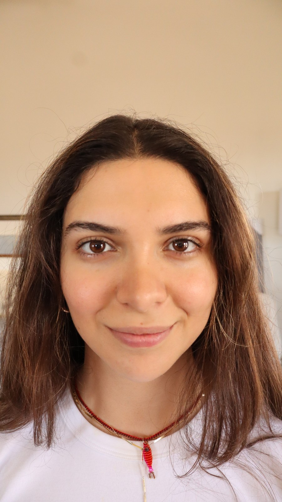
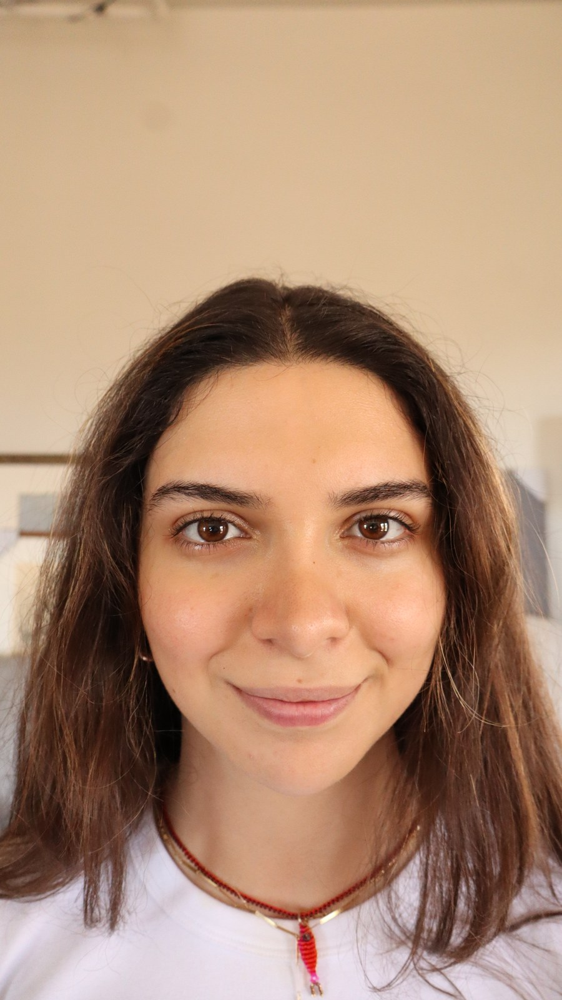
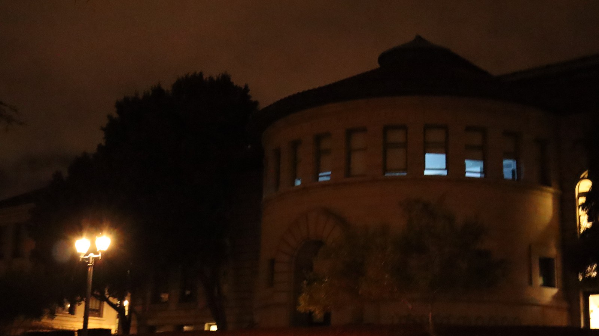
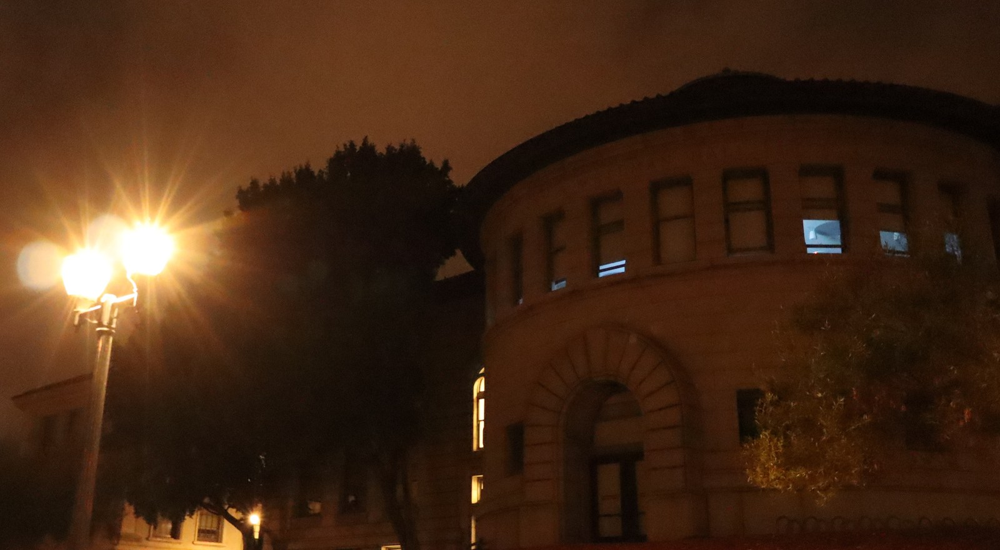
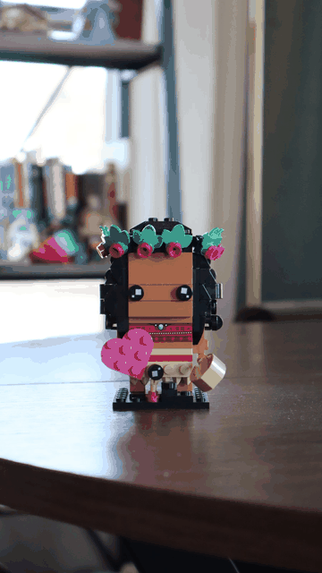
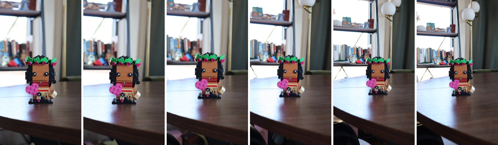

All photos were shot on a CANON EOS R100 camera with a 45 mm lens.
Close up without zoom, then from several feet back with zoom, keeping the face the same size.


Up close, the nose is much nearer to the lens, so it appears larger. For the same reason the face looks narrower: the cheeks and chin are closer to the camera and get enlarged, while the sides of the face and the ears sit further back and shrink. Stepping back evens out all of these distances, and zooming only scales the image.
Far away with zoom, then walked up without zoom, keeping the building the same size.


From far away, the near and far parts of the building are at nearly the same distance from the camera, so depth flattens. Up close, the ratio of those distances is large and the scene looks deep. The close-up is also noticeably sharper, especially in detailed areas like the door frame. Zooming in magnifies everything, including flaws. It magnifies small camera movements, making blur and other flaws more noticeable.Up close, the lens works at its sharpest and the building fills the frame without any magnification.
Moving the camera back while zooming in, so the subject stays the same size and the background stretches.

